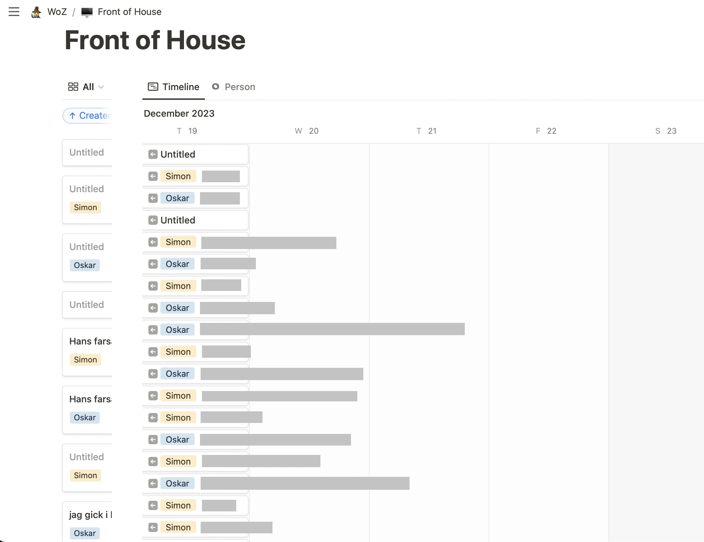
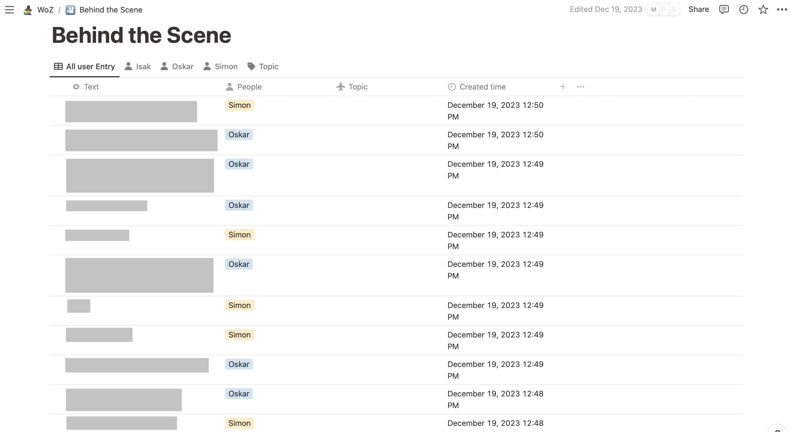
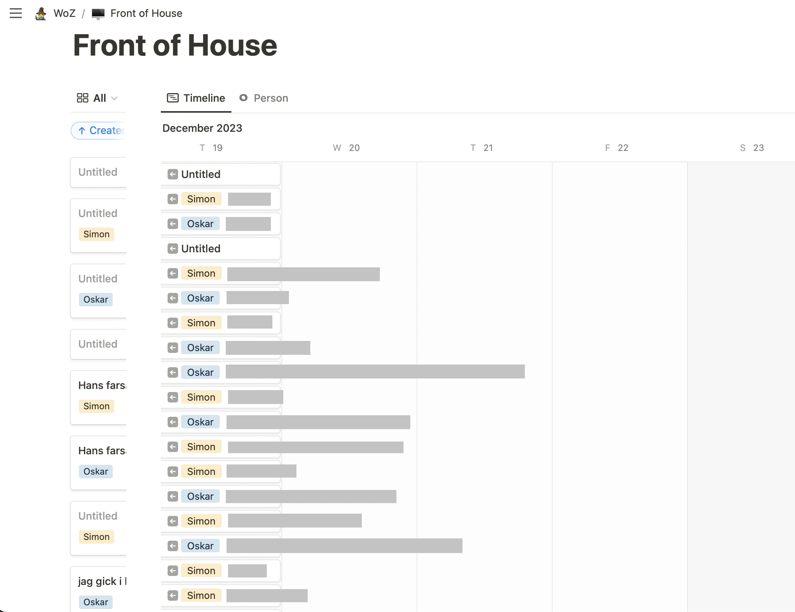
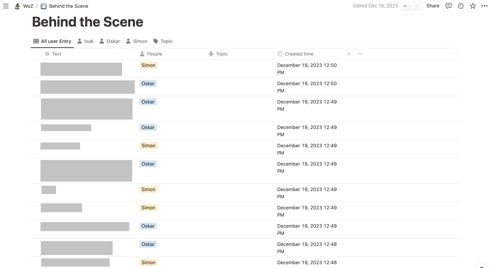

ReConvo
UX-design, UI-design, UX-research
"ReConvo" was a prototype application developed to explore how AI-driven tools can support meetings and group conversations. The goal was to build and test a “conversation assistant” that could visualize and communicate important aspects of a meeting, both live and after the meetings as a summary. These aspects were e.g who spoke when, how fast they spoke, and what topics were discussed. In addition to this, the project also looked at the privacy implications of such a system, and if people are okay with such an intrusive design.
Through the use of Wizard of Oz prototyping, both analog and digital, as well as other user-centered evaluation methods, we designed and iteratively tested the tool in order to better understand its impacts.
Findings showed a generally positive response. Users appreciated the visual feedback and found the concept interesting. Privacy concerns were context-dependent, as users thought the application would be more acceptable in professional meetings than personal conversations. Small design choices, such as using colors over percentages, made feedback feel more reflective than judgmental. Finally, users preferred post-meeting insights and summaries over the live transcriptions and feedback.
Role
UX-Researcher & Designer
Team
Collaborative project with 3 other HCI students in the same role
Tools & Methods
Figma, Notion, Wizard of Oz, Prototyping, Provotype, Wireframing, Cooperative Evaluation, Cognitive Walkthrough
Time Spent
2023, 2 months, Part-time 30%
Design flow.
 




Design Process & User Tests.
Problem & Context
The concept of "ReConvo" was made in order to explore how AI could provide real-time, visual feedback and post-meeting insights to improve the structure and flow of meetings. However, the concept raised important questions in terms of privacy and user comfort, especially in regards to being recorded and evaluated. The challenge was to explore the value and acceptability of such a system. Could meeting participants find value in having their speaking behaviors visualized? Would the tool be seen as helpful or intrusive? And what design choices could make the system feel more acceptable and transparent?
Design Process
We followed an iterative design process using multiple rounds of prototyping and user testing. Early on, we came up with several voice-based concepts, but eventually we ended up narrowing our focus down to a meeting assistant that tracked conversation activity. The prototyping process involved two parts. The first one focusing more on testing the acceptance and response to the concept through both analog and digital Wizard of Oz prototypes. The second part then used the insights from the WoZ tests to design and test a high-fidelity prototype in Figma.
- Wizard of Oz (WoZ) Prototypes:
- Sticky Note Prototype: Live note-taking by “wizards” displayed participants contributions with color-coded sticky notes during a real conversation. Participants could see what had been said, and how much each participant had spoken during the conversation.
- Notion Prototype: A digital version using the Notion app simulated live "AI" note-taking during a conversation. This helped us better understand how a digital medium might affect users perception of the concept.
- High Fidelity Prototype (With 3 major functions):
- Meeting Preparation: Plan agenda, invite participants, and access past sessions.
- Live Session: Real-time visualization of who speaks when, how fast users speak, and interactive functions allowing muting and taking breaks.
- Post-Meeting Summary: Key metrics such as talk time, word use, topics discussed, and visual graphs summarizing the meeting's content and overall flow.
Key Features
These are some of the key features in the High-Fidelity Prototype:
- Color-Coded Speaking Indicators - Replaced raw numbers with colored visuals to show participation levels.
- Speech Speed Meter - Real-time feedback on individual speaking pace to support self-awareness.
- Session Summary & Stats - Post-meeting screen with optional analytics like the most used words, participation amount, and other general feedback. The feedback is intended to help users better understand what they can individually and as a team change to improve meeting flow.
- Mute & Privacy Controls - Users could pause recording/tracking during sensitive discussions, giving them more control over what data is collected and saved.
Impact & Insights
User evaluations included both cooperative and cognitive walkthrough methods, involving participants with varied attitudes toward surveillance and AI. The overall key findings from this project were:
- Positive Reception - Participants appreciated the visual feedback, found it helpful for focus and structure, and did not find the concept overly intrusive.
- Privacy & Context - While participants accepted the tool in professional settings, they noted it would be less acceptable in casual or personal contexts.
- Design Matters - Small changes, such as using colors instead of percentages, helped shift feedback from being overly judgmental to fun and reflective.
- Live vs Post-meeting - Users were in general, more interested in post-meeting insights than full conversation transcripts, valuing summaries over live feedback.
The concept of a "ReConvo" shows that AI-driven meeting tools such as this could indeed prove to be useful. Though, it is important to be careful when it comes to design choices affecting privacy and intrusiveness.